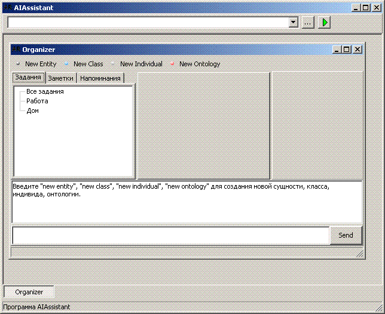

Система AIAssistant является платформой для работы приложений и агентов.
AIAssistant - это программа-персоональный помощник человеку. Основной управляющей формой является главное окно с меню и строкой ввода команд. С помощью главного окна можно производить настройки (язык общения, виды запуска и т.д.), а также открывать новые виды работ (отдельные приложения системы) в отдельных формах.

Рис. 1. Главное окно программы AIAssistant и приложение AIOrganizer
На данный момент (30.06.2007) система AIAssistant создается в виде локальных приложений: AIAddressBook.exe, AIOrganizer.exe, AIReminder.exe. В каждой из этих программ "вшит" определенный GUI пользователя. В дальнейшем будет одна программа (AIAssistant.exe) внутри которой GUI пользователя будет формироваться динамически. Формат для хранения внешнего вида форм будет XUL.
© AIKernel 2007-2011
29.07.2007 - 27.04.2011